Creazione WO Frame + Lenti o Solo Lenti
Su Ciao!Optical si può scegliere cosa vendere al cliente, Complete pair nel caso si voglia vendere sia montatura che lenti o Solo lenti nel caso di solo le lenti.
A seconda di cosa si sceglie, al termine della creazione del vostro WO è il sistema stesso che fornisce un feedback sulla lavorazione con cui quell\'ordine verrà prodotto (job type)
1.Se abbiamo scelto "Complete pair" il sistema può darci 3 feedback diversi:
-
Complete pair se c\'è la disponibilità in laboratorio sia della montatura che delle lenti;
-
Lens only se servono solo le lenti dal lab e la montatura è già in negozio;
-
Frame to Come se la montatura non è qualificata a Sedico (per esempio il caso di Lindberg)
2.Se abbiamo scelto "Solo lenti" il sistema in base a cosa abbiamo selezionato può dirci:
-
Se abbiamo fleggato montatura del cliente ci verrà sempre proposto Frame to Come in maniera cautelativa;
-
Se abbiamo inserito UPC di un prodotto riconosciuto a Sedico, allora il sistema potrà proporre lavorazione di Lens Only
Vediamo adesso tutti i passaggi per inserire un ordine di un occhiale completo, cioè Frame + Lenti, si accede al Profilo Cliente:
- Assicurarsi di aver selezionato una prescrizione attiva per un difetto visivo per occhiale da vista (vedere capitolo 4.3). Una volta selezionata una prescrizione, questa sarà visibile in anteprima nel Profilo Cliente.
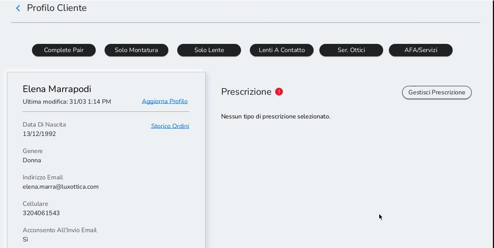

Step 1: selezione montatura
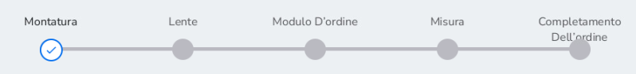
La selezione della montatura può avvenire in diverse modalità:
A. Inserendo l'UPC di una montatura. È possibile scansionarlo con la fotocamera dell'iPad o il bar code reader. Selezionare Cerca Montatura o premere invio per visualizzare la selezione effettuata.
B. Ricercando per brand utilizzando il campo Marca e Codice Modello. È necessario sempre inserire prima il brand nel campo Marca dove a seconda delle lettere inizialmente inserite, il sistema suggerisce automaticamente in un menu a tendina i brand selezionabili. Dopodichè è necessario inserire il codice del modello nel campo Codice Modello (es. RB4147). Selezionare Cerca Montatura o premere invio avviare la ricerca.
Il risultato della ricerca è una lista di tutti gli articoli disponibili del brand selezionato. Dopo aver cliccato sulla riga della montatura d'interesse, posizionare il puntatore del mouse fuori dalla lista e scorrere verso il basso per visualizzare la selezione effettuata.
C. Selezione da Smartshopper (solo su iPad). Cliccare su Avvia Smart Shopper e scegliere la montatura. Selezionare Aggiungi al carrello successivamente Vai al carrello ed in definitiva Ordina adesso. La montatura selezionata diventa così visibile su Ciao!
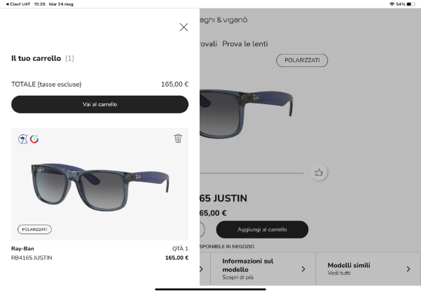
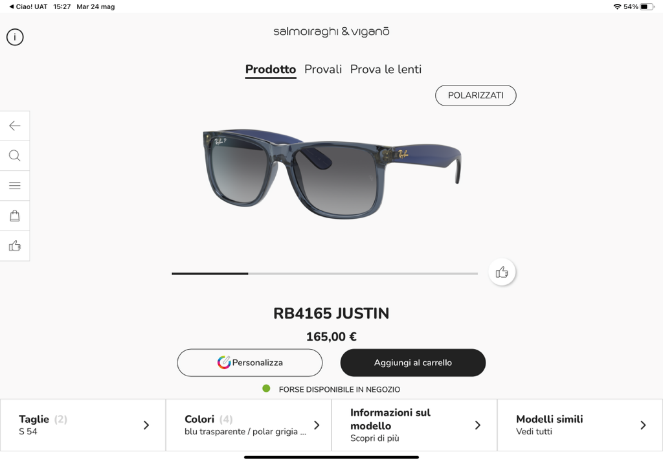
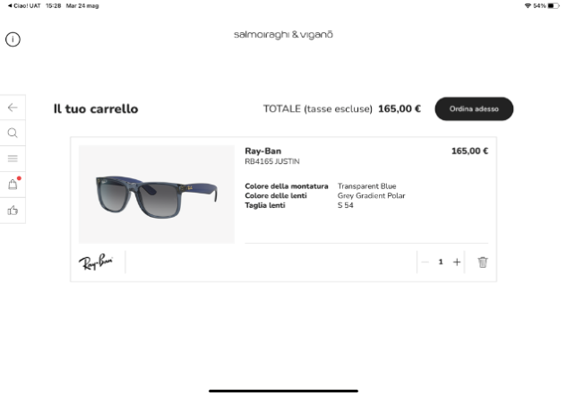
Viceversa, il flusso può partire da Smartshopper (vedere dettagli flusso da Smart Shopper nel capitolo 12)
D. Montatura del Cliente: questa opzione verrà effettuata quando si presenta un caso di cambio lenti e si potrà effettuare una SOLO volta [seguito il percorso di Solo Lenti]{.underline}.
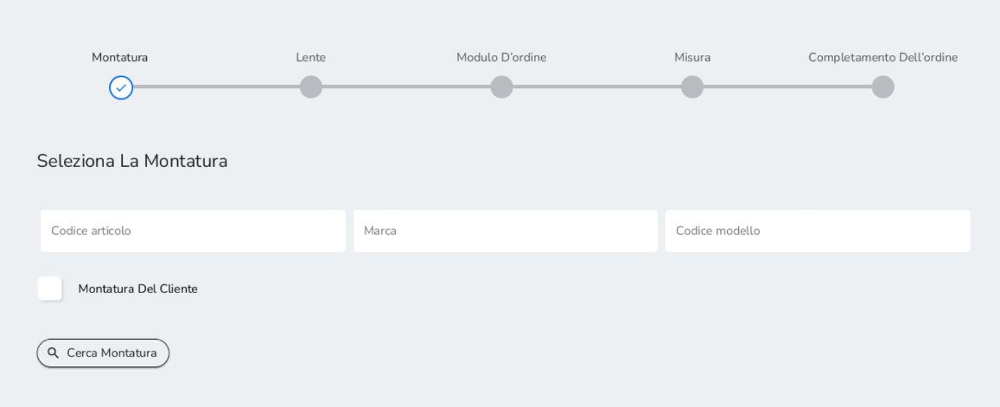
I campi obbligatori da compilare sono il prezzo di vendita (inserire il valore 0), la tipologia di occhiale (Oftalmico o Sole) e il fornitore (Marca). Selezionare sempre Montatura in Negozio sulla destra e cliccare su Continua.
Se l'ordine è un Lens Only, selezionare Montatura del Cliente nel caso in cui la montatura sia di proprietà del cliente.
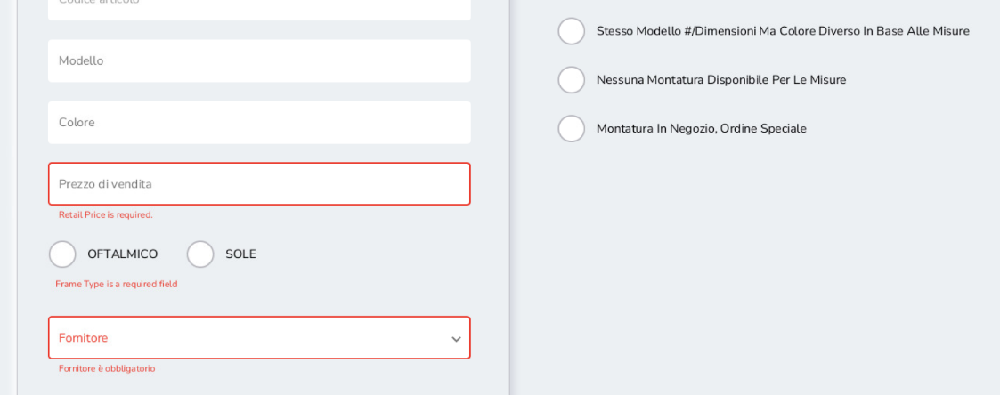
Dopo aver selezionato la montatura con una delle modalità viste sopra flaggare una delle seguenti opzioni:
A. Montatura in negozio, opzione più utilizzata (è quindi possibile procedere con la presa misurazioni per qualsiasi tipo di difetto visivo)
B. Montatura presente in negozio, ma di differente colore
C. Nessuna montatura disponibile per le misure. Selezionando questa opzione e cliccando su Continua esce un messaggio di errore e il sistema propone di selezionare una nuova montatura
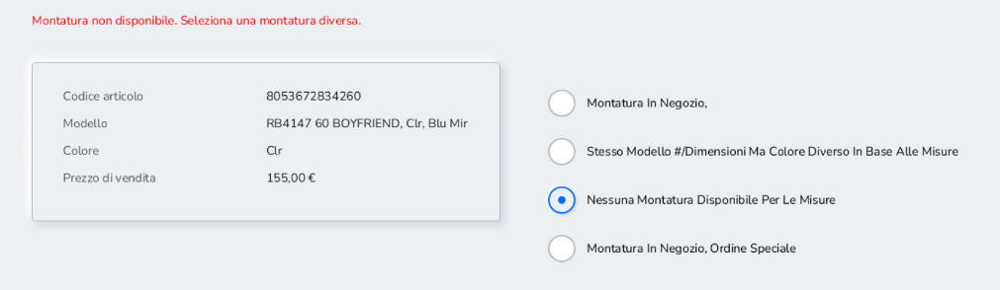
D. Montatura in negozio, Ordine Speciale (da non utilizzare)
Cliccare su Continua per procedere con la selezione delle lenti. Cliccare su Sospendere ordine per mettere in pausa la vendita. L'ordine viene salvato nella lista di ordini attivi dello store per 3 giorni, al termine dei quali potrà comunque essere recuperato dalla sezione Archivio entro 27 giorni.
Step 2: Selezione lenti oftalmiche
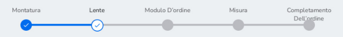
Lo step successivo è la selezione delle lenti oftalmiche che avviene con i seguenti step:
- Selezionare la tipologia di lente (Chiare, Sole o Transitions)
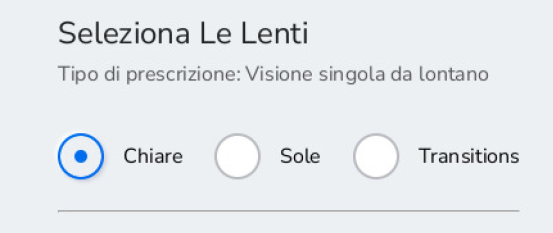
- Il campo Tipo di Visione è già precompilato con le alternative supportate dal tipo di prescrizione selezionata prima di iniziare il flusso d'ordine. Il tipo di prescrizione selezionato è visibile sotto la dicitura Seleziona Lenti. Nell'esempio riportato sotto la prescrizione selezionata è Visione Singola da Lontano e quindi nel campo Tipo di Visione viene automaticamente inserito Monofocale.
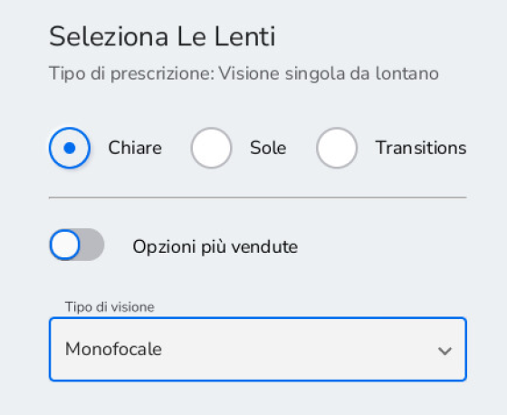
- Selezionare Design delle Lenti, Materiale, Trattamento e Colore. La possibilità di selezionare ognuno di questi campi si abilita una volta inserito il precedente.
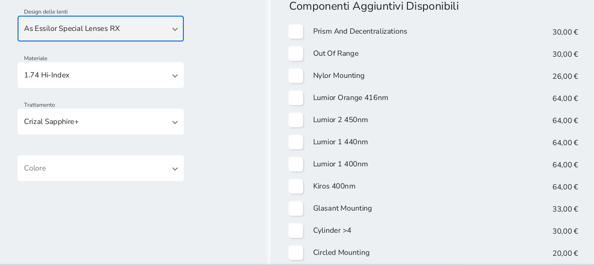
È possibile verificare le caratteristiche delle lenti selezionate attraverso i pacchetti lenti. Accedere al toolkit cliccando sull'icona del mappamondo in basso a sinistra e selezionare la cartella Listini nella prima pagina del toolkit. Aprire la cartella che contiene i listini d'interesse.
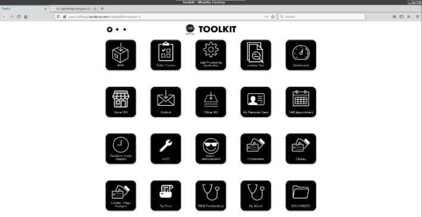
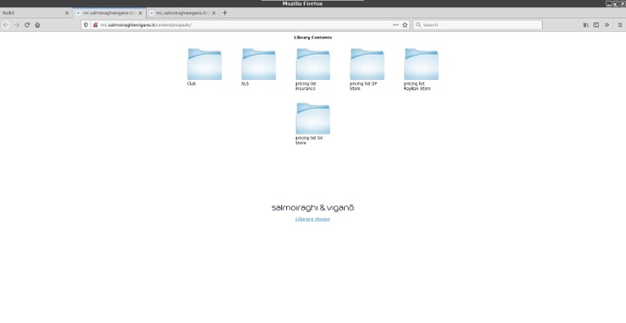
Sulla destra è presente una sezione di dettaglio delle caratteristiche delle lenti selezionate. Sotto questa sezione è presente la sezione dedicata agli add-on disponibili per il pacchetto lenti selezionato (servizi e lavorazioni aggiuntive). [Selezionare sempre l'opzione]{.underline} Mounting nei componenti aggiuntivi.
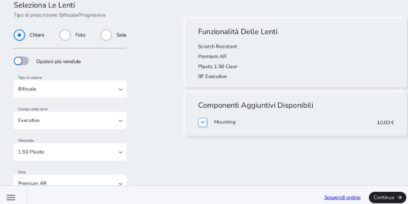
Cliccare su Continua per accedere alla sezione riassuntiva dell'ordine. Anche in questo step è possibile cliccare su Sospendere ordine per salvare l'ordine nella lista ordini attivi.
Step 3
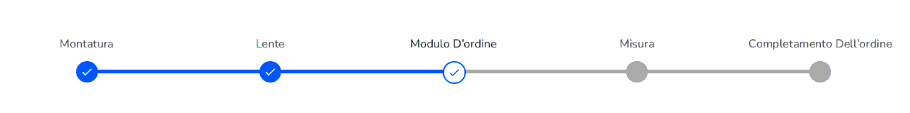
Il Modulo d'Ordine è la sezione di riepilogo di tutti i componenti dell'ordine che sono stati selezionati.
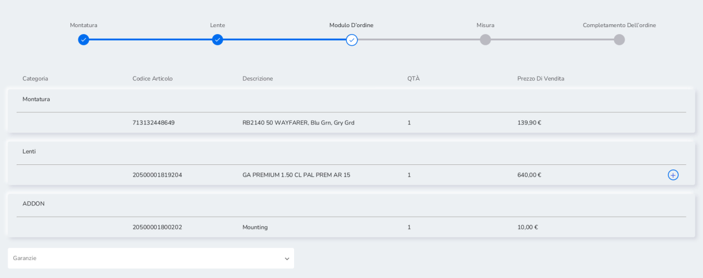
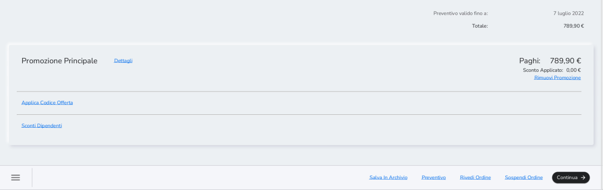
Nella prima parte della sezione sono elencati gli elementi selezionati fino a quel punto: upc della montatura, upc del pacchetto lenti ed eventuali add on selezionati. Questa è la fase in cui effettuare un ultimo controllo per assicurarsi che il pacchetto lenti selezionato corrisponda a quello effettivamente d'interesse controllando che l'upc qui mostrato sia uguale a quello presente sul listino.
In questa sezione è possibile, inoltre:
- Selezionare la garanzia che si desidera vendere. Le garanzie sono selezionabili dal menù a tendina attivabile dal campo Garanzie.
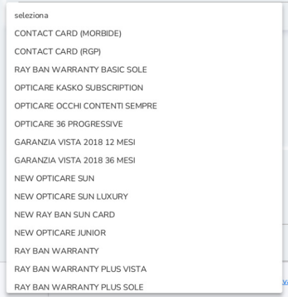
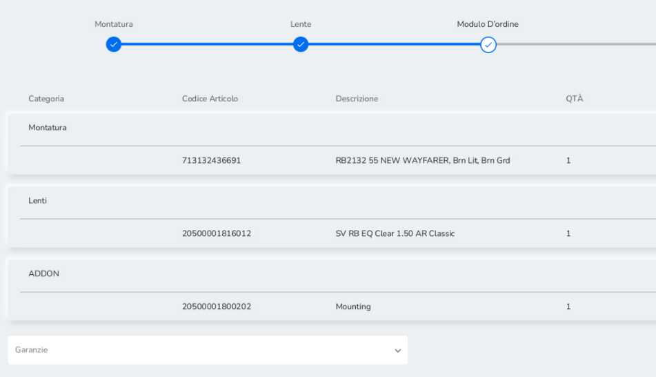
È importante selezionare la garanzia giusta, in quanto, il sistema non opera alcun controllo sulle garanzie. Per esempio, se si seleziona una garanzia Opticare 36 progressive ma le lenti sono monofocali, il sistema non evidenzia l'incongruenza.
-
Applicare eventuali Promozioni o Sconti Dipendenti (per dettagli vedere Cap 12 del manuale)
-
Attivare la generazione di un preventivo
Per attivare la generazione di un preventivo cliccare su Preventivo e Salva in Archivio. In questo modo viene dato l'input ad una app esterna al sistema Ciao! per creare il preventivo e l'ordine viene salvato direttamente nella Lista Ordini in Archivio in modo che rimanga visibile per i successivi 27 giorni.
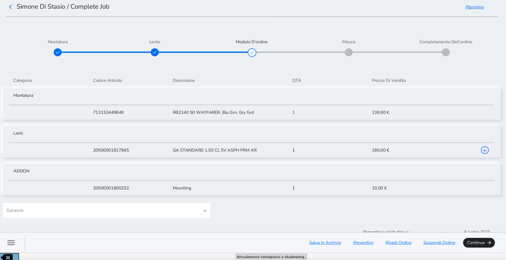
Per visionare il preventivo e condividerlo con il cliente, accedere al Toolkit e selezionare l'app Preventivi. Le credenziali d'accesso da utilizzare sono quelle di MIM.
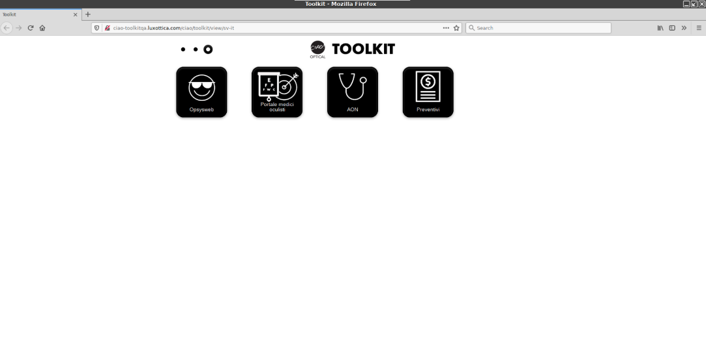
Cercare l'ordine attraverso il nome, cognome, e-mail del cliente o ID Ordine. L'ID ordine può essere recuperato da due punti del flusso di vendita:
-
Dalla sezione Modulo d'Ordine, cliccando su Rivedi Ordine
-
Da Elenco ordini, selezionando Archivio e cliccando su Dettagli
Una volta selezionato il preventivo, cliccare su Action e selezionare Preview per vedere in anteprima il pdf del documento.
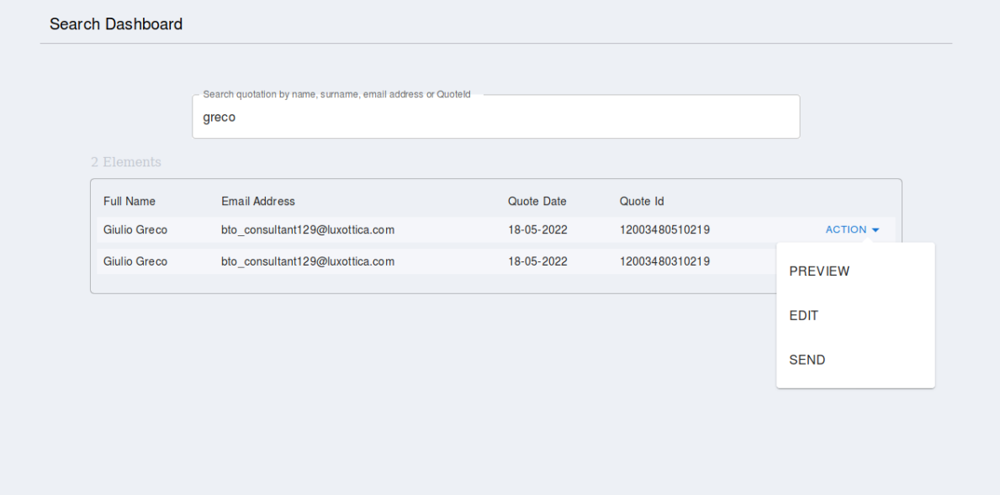
Una volta aperto il preventivo, selezionare Send per mandarlo via e-mail al cliente, Edit per modificare il preventivo e Print per stamparlo.
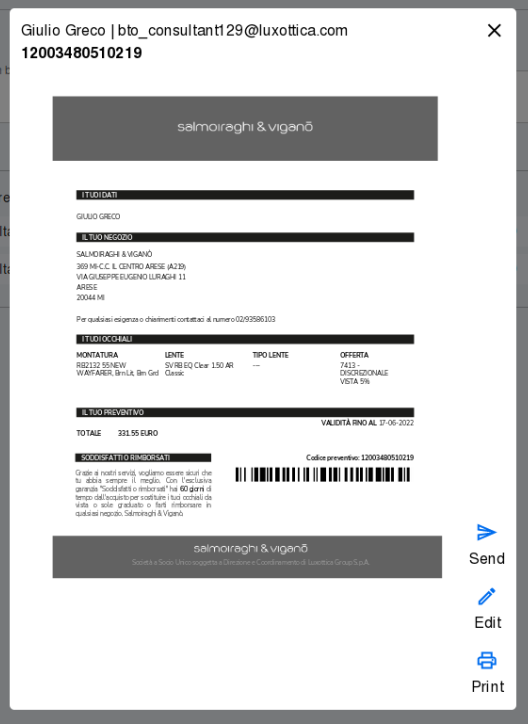
Nel momento in cui il cliente torna in negozio per completare il suo ordine, accedere alla Lista Ordini in Archivio e ricercare l'ordine attraverso la scansione del barcode presente sul preventivo o inserendo il cognome e nome del cliente. Cliccare su Sposta in Attivo, recuperare l'ordine nella Lista Ordini Attivi e selezionare Modifica. L'ordine viene quindi riaperto dallo step del Modulo d'Ordine.
Se non si vuole stampare un preventivo, cliccare su Continua per proseguire con gli ultimi due step del flusso di ordine.
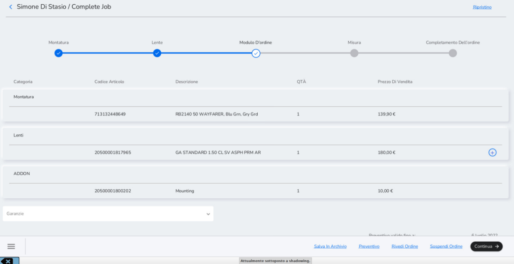
Step 4: Presa misurazioni
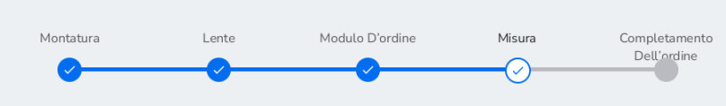
Prima di procedere alla compilazione dei campi, assicurarsi di aver flaggato la casella Inizio Misurazione.
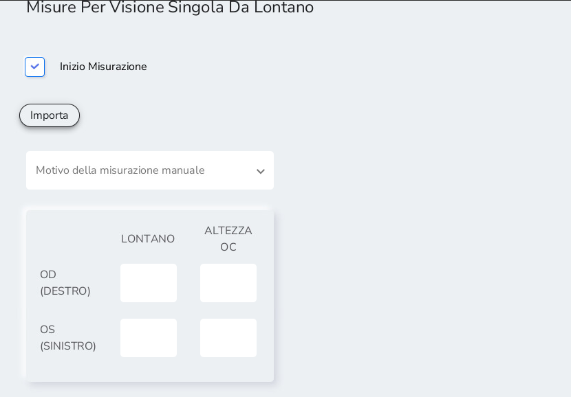
Sono presenti diverse modalità per l'inserimento dei dati delle misurazioni [(nel caso in cui aveste iniziato il flusso da pc, salvare la vendita e recuperarla dall'iPad tramite la lista Ordini Attivi perché solo quest'ultimo è integrato con Accufit]{.underline}).
A. Importazione dei parametri catturati attraverso Accufit: per aprire l'app Accufit selezionare il tasto Cattura e procedere alla presa dei parametri (solo su iPad) e salvare. In questo caso tutti i dati, eccetto quello sullo spessore delle lenti, sono automaticamente compilati in base alla montatura selezionata. Compilare i dati sullo spessore e indicare il motivo della misurazione manuale.
B. Importazione dei parametri catturati attraverso torretta Varilux. Cliccare su Importa.
C. Inserimento manuale in caso di problemi di collegamento o misurazioni prese con Eyeruler (es: Varilux Physio). Anche in questo caso, indicare il motivo della misurazione manuale come mostrato in figura.
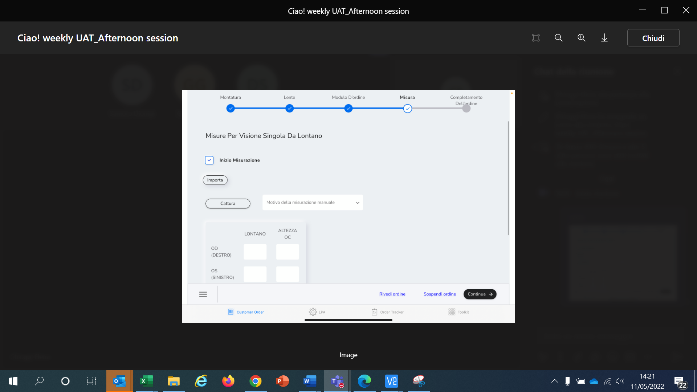
Per tutte le misurazioni inserite il sistema effettua una validazione per verificare che i dati siano corretti. In caso di misurazioni non corrette il sistema segnala l'errore in rosso, suggerendo gli intervalli di valori corretti da inserire.
Per il campo Spessore, selezionare sempre Normali.
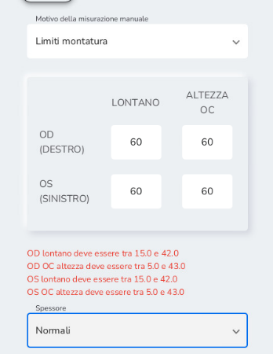
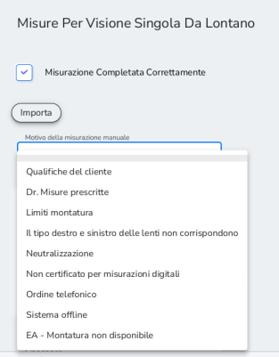
Alla fine della sezione è presente uno specchietto di riepilogo delle informazioni relative alla montatura. Tale specchietto si popola in automatico. In alcuni casi alcuni campi possono non essere compilati. È possibile compilarli oppure continuare lasciando i campi vuoti.
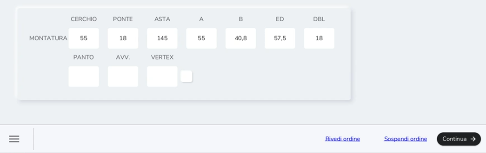
Cliccare su Continua per proseguire o su Sospendi ordine. È inoltre possibile verificare la correttezza dei dati inseriti cliccando su Rivedi Ordine.
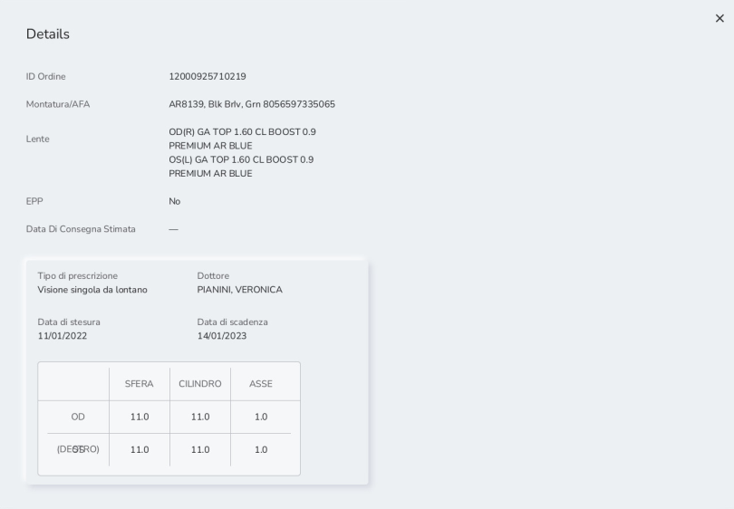
Step 5: Completamento ordine su Ciao!
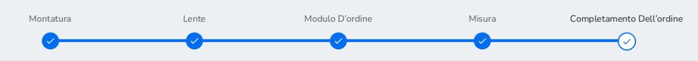
Come ultimo step del flusso il sistema effettua due verifiche: la disponibilità a magazzino Sedico dei prodotti selezionati e la fattibilità della combinazione montatura / lenti / misurazioni inserite.
Vi possono essere due tipi di pop-up:
Tipologia di ordine: se l'ordine è corretto questo pop-up indica il feedback della lavorazione che il sistema identifica, cioè se il job verrà realizzato come Complete job, Frame TO Come o Lens Only.
Se abbiamo scelto all'inizio della creazione del WO Complete pair il sistema può darci 3 feedback diversi:
-
Complete pair se c\'è la disponibilità in laboratorio sia della montatura che delle lenti;
-
Lens only se servono solo le lenti dal lab e la montatura è già in negozio;
-
Frame to Come se la montatura non è qualificata a Sedico (per esempio il caso di Lindberg)
Se abbiamo scelto invece la voce Solo lenti il sistema in base a cosa abbiamo selezionato può dirci:
-
Se abbiamo fleggato montatura del cliente ci verrà sempre proposto Frame to Come in maniera cautelativa;
-
Se abbiamo inserito UPC di un prodotto riconosciuto a Sedico, allora il sistema potrà proporre lavorazione di Lens Only
Le diciture che il sistema può riportare in questo campo sono le seguenti:
1.Questa è una lavorazione one hour
2.Questo ordine verrà gestito dal Laboratorio il giorno successivo
3.Il sistema è offline, questo ordine dovrà essere inoltrato nuovamente a LPA
4.Questo ordine è un Complete Pair gestito dal Laboratorio
5.Questo ordine è un Frame to Come. Il Laboratorio necessita l'invio del frame da parte del negozio
6.Questo ordine è un Lens Only con lavorazione one hour. Il Laboratorio spedisce solo le lenti non tagliate.
7.Questo ordine è un Lens Only. Il Laboratorio spedisce solo le lenti.
8.Questo ordine prevede delle lenti da fornitore terzo. No invio ordine a Sedico
È quindi molto importante prestare attenzione alla dicitura che il sistema vi riporta nel quadrato sottostante, perché è una prima indicazione di quello che sarà il job type del WO che state creando.
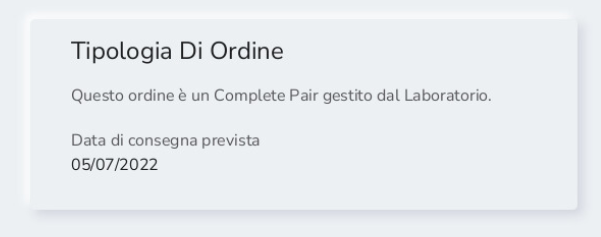
A. Errore: nel caso in cui il sistema riscontri degli errori di
combinazione viene mostrato un alert che indica il tipo di errore
(es: spessore lenti non compatibile con montatura selezionata;
parametri scorretti inseriti per le misurazioni). I possibili
messaggi:
Se si comprende l'errore e si riesce a modificare correttamente l'ordine, procedere nel flusso. Altrimenti, se non si comprende l'errore o se non si riesce a risolverlo, contattare l'Help Desk Toshiba.
Nel caso in cui vi fosse stata una ricodifica di prodotto a listino e si selezionassero prodotti (es: lenti) con un vecchio codice questo è il punto in cui verrà segnalata l'eventuale scorrettezza della combinazione delle lenti / montatura.
La data di consegna prevista è la stessa di quella indicata su order tracker.
L'ID vassoio è un campo utilizzato per facilitare l'identificazione di un ordine all'interno della lista ordini attivi e LPA.
L'ID vassoio è utile nel caso in cui la vendita sia coperta da assicurazione. In questo caso, infatti, la trasmissione dell'ordine al laboratorio è sospesa previa approvazione da parte della compagnia assicurativa ed è necessario confermare su LPA l'invio dell'ordine una volta ricevuta l'approvazione. Per recuperare velocemente l'ordine sospeso è possibile utilizzare una convenzione tale per cui l'ID vassoio è nominato "ASS". Una volta ricevuta l'approvazione sarà sufficiente recuperare da LPA l'ordine con ID vassoio "ASS" per inoltrarlo al laboratorio.
Selezionare i tasti corrispondenti per:
A. Caparra: raccogliere caparra per l'ordine (da 0 € al 100% del valore) se no caparra no registrato come WO generato
B. Sospendi ordine: per sospendere la transazione e recuperarla successivamente dalla lista di ordini attivi nel caso in cui fosse necessario
C. Continua a fare acquisti: per lasciare al cliente il tempo di visionare altri prodotti ed eventualmente aggiungere all'acquisto altri elementi.
Per ordini multipli usare questa opzione. Dopo aver cliccato su questa opzione, il sistema riporta alla schermata di inizio flusso in cui è possibil effettuare un nuovo ordine. Procedere con il nuovo ordine e cliccare su Salva Ordine per salvare il secondo ordine nella lista degli ordini attivi. Per completare il pagamento multipli andare sulla lista degli ordini attivi, selezionare gli ordini di interesse e cliccare su Procedi al Pagamento per ultimare il pagamento di entrambi gli ordini.
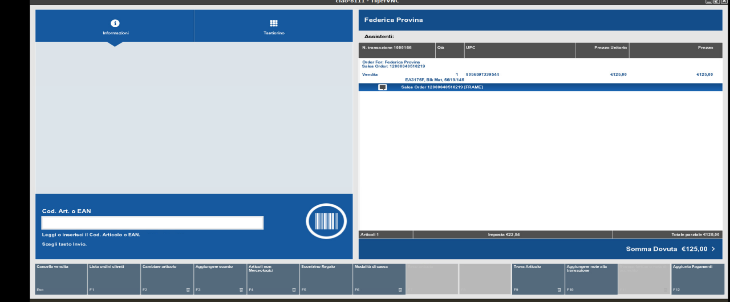
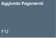
D. Salvare l'ordine: per un secondo momento. L'ordine è salvato nella lista ordini attivi.
E. Procedi al pagamento: Si procede al pagamento dell'importo totale.
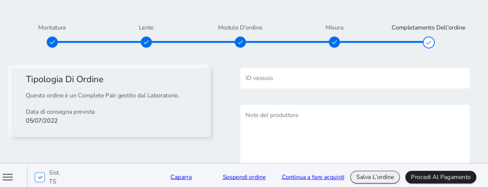
Raccolta caparra
Si consiglia di prendere sempre una caparra (anche a valore zero) quando si inserisce un ordine in modo da avere l'ordine sempre disponibile nella Caparra. Gli ordini presenti nella lista Caparra, a differenza degli ordini presenti in lista ordini attivi o in archivio, non sono soggetti ad alcuna scadenza.
La raccolta della caparra può avvenire tramite due flussi:
-
Dalla pagina Completamento dell'Ordine: contestualmente al flusso di ordine, cliccando su Caparra come anticipato nel capitolo precedente
-
Dalla lista ordini attivi: recuperando l'ordine d'interesse dalla lista e cliccando su Caparra.
Cliccando su Caparra il sistema si connette a Xstore, dove avviene la raccolta della caparra.
Cliccare su Aggiunta Pagamenti. Se si sta effettuando il flusso su iPad, cliccare su Somma dovuta (per iPad non è disponibile l'opzione di pagamento Contanti).
Selezionare il metodo di pagamento:
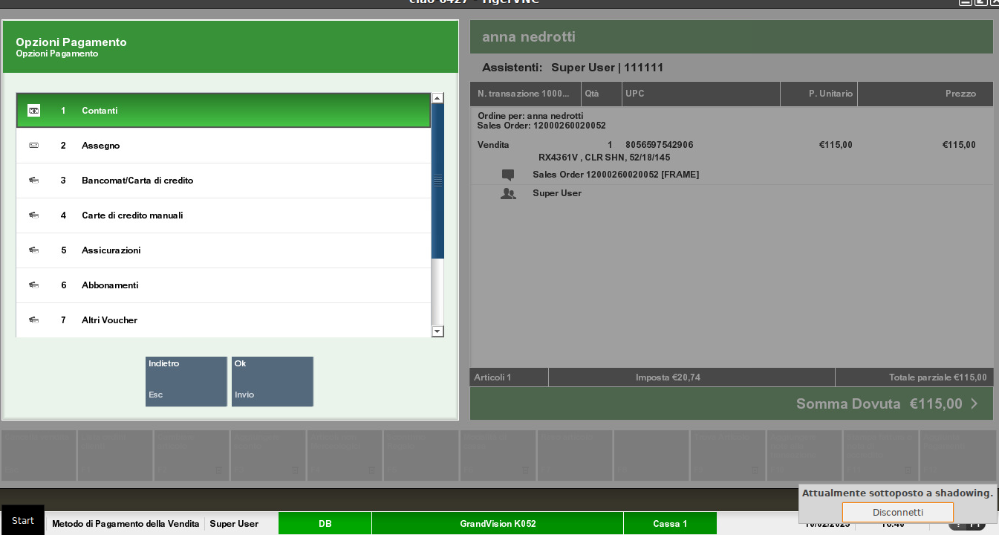
-
Selezionare contanti per un pagamento in contanti. Il limite massimo accettato di pagamento in contanti è di 1999,99 euro
-
Selezionare Assegno per incassare un assegno. Inserire nei dati richiesti 11 volte 1 e premere invio, poi reinserire solo una volta 1.
-
Selezionare Bancomat / Carte di credito per pagare con questi metodi.
-
Nel caso in cui sia richiesta una firma è possibile raccoglierla su iPad.
-
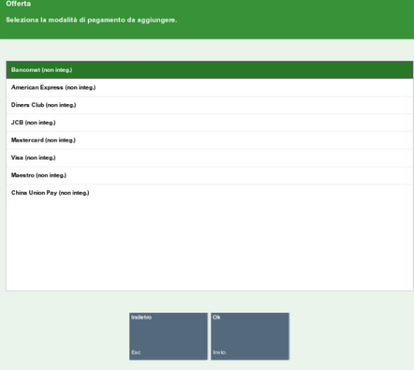
Selezionare Carte di Credito manuali per pagare con carte di credito o bancomat. Rispetto al metodo precedentemente descritto, qui è necessario indicare manualmente il tipo di carta scegliendolo dall'elenco. Inserire le ultime 4 cifre del numero della carta e la data di scadenza (formato: MMAA). -
Selezionare Assicurazioni e Abbonamenti per trovare l'elenco completo di questi ultimi
-
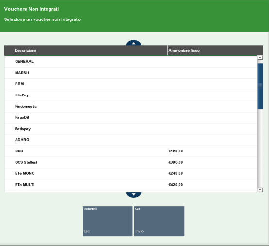
Selezionare Voucher non integrati per utilizzare tutti i restanti metodi di pagamento (es: assicurazioni, abbonamenti, gift card, scorrendo in basso troverete XME PROTEZIONE che va a sostituire il metodo di pagamento provvisorio Best Shopping).
Una volta selezionato il metodo di pagamento, inserire l'importo della caparra e cliccare su Invio.
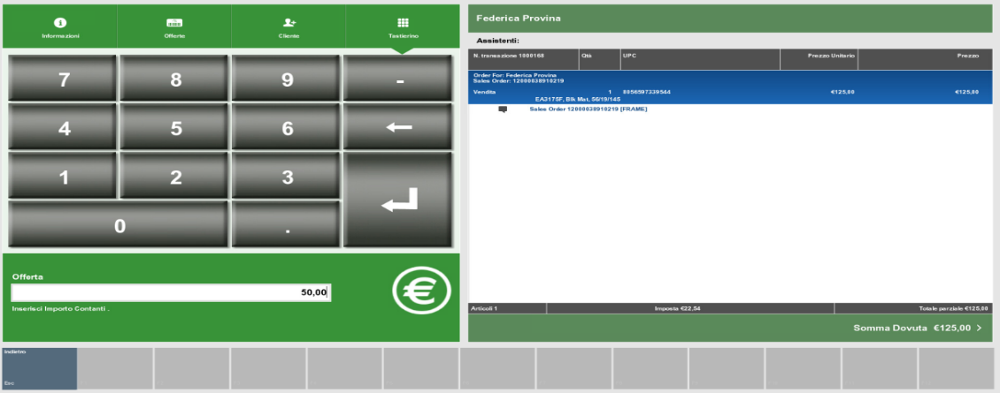
Dopo aver premuto Invio per depositare la prima caparra, selezionare In attesa di pagamento.
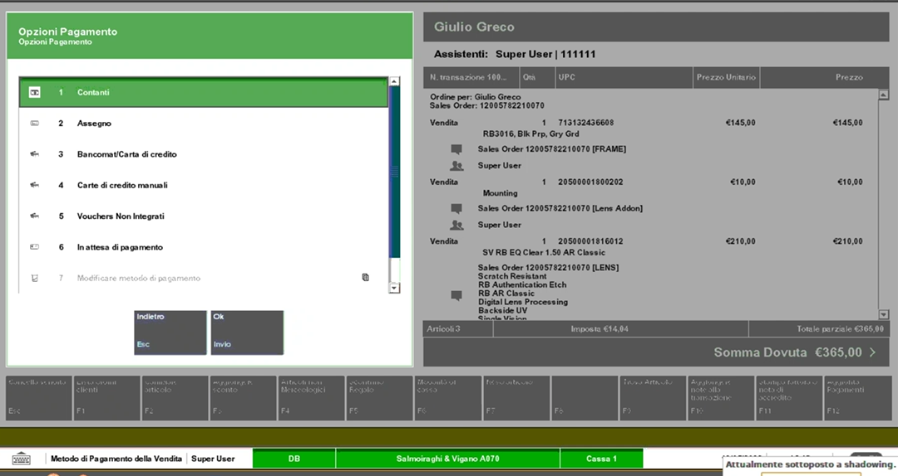
Cliccando su In attesa di pagamento il sistema calcola e registra automaticamente l'importo restante da versare per saldare la vendita. Cliccare nuovamente su Invio. È necessario calcolare il saldo, solo al versamento della prima caparra, non per le eventuali caparre successive.
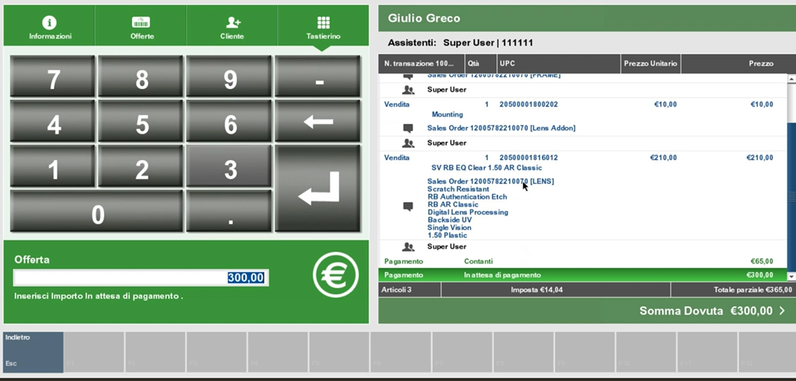
Una volta cliccato su Invio, selezionare la modalità d'invio del documento caparra (stampa o e-mail). Cliccando su e-mail, il sistema recupera automaticamente la mail registrata del cliente. È in ogni caso possibile modificare la mail.
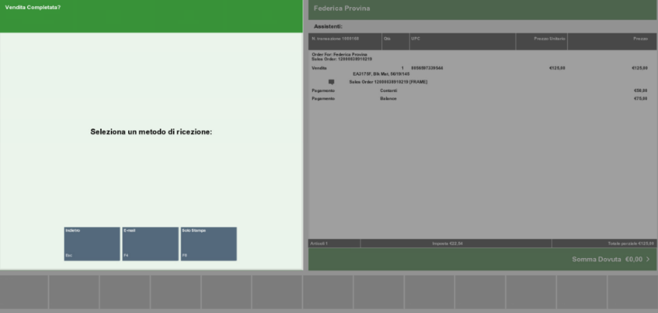
Da qui è possibile decidere se stampare e inviare l'e-mail di conferma o se inviare solo l'e-mail.
Una volta selezionato il metodo di condivisione della caparra, il sistema torna nella schermata arancione di Xstore. Accedere per tornare sulla Ricerca cliente.
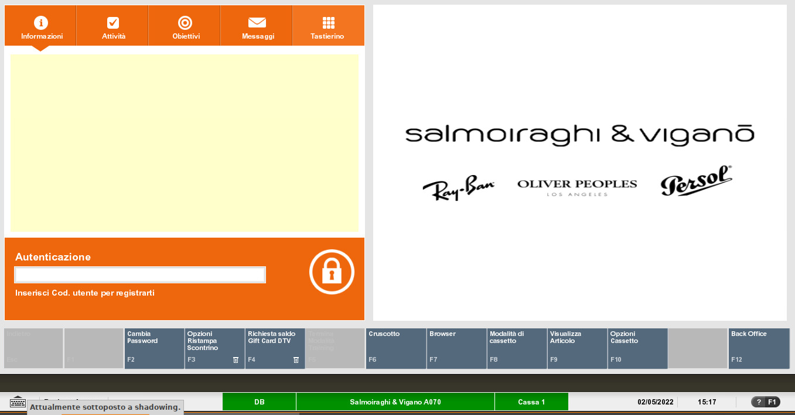
Al completamento del flusso vengono stampati tre documenti:
- Documento di conformità (in doppia copia)
Questo documento è possibile ristamparlo andando su: Backoffice -- Giornale -- Giornale elettronico. Ricercare la transazione per la quale si desidera ristampare il documento di conformità, per facilitare la ricerca, inserire il cognome del cliente nel campo Cliente o Cognome
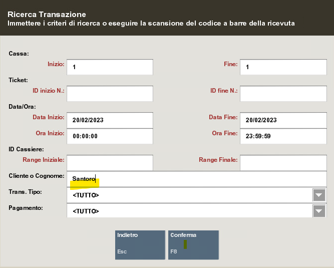
Premendo su Conferma appariranno tutte le transazioni per quel cliente, selezionare la transazione di presa caparra e premere su Visualizza dettagli. È fondamentale selezionare la transazione di presa caparra altrimenti NON verrà visualizzato il tasto èer ristampare il documento di conformità.
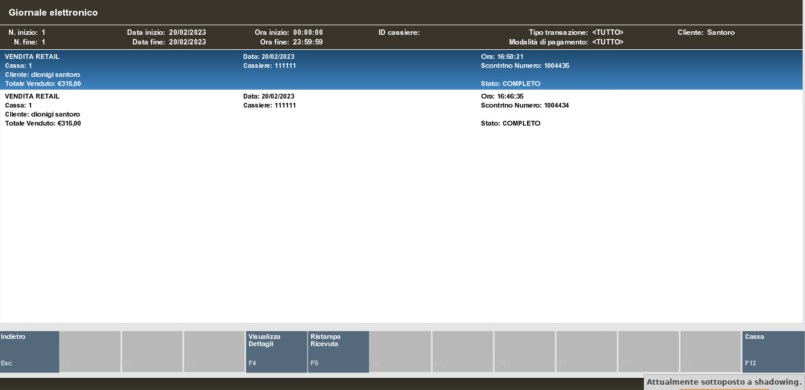
Una volta selezionata la transazione di presa caparra, cliccare su Statement of compliance Reprint e il documento di conformità verrà ristampato.
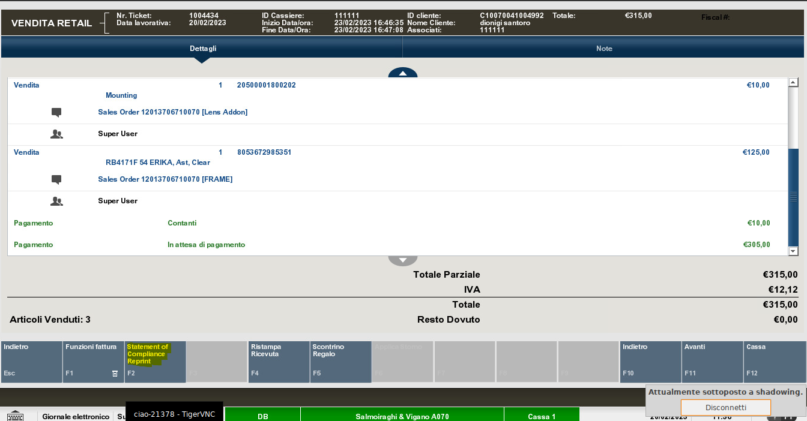
-
Tray ticket, assimilabile al Recap del WO in Acuitas. Questo documento può essere utilizzato per creare la bustina di consegna dell'occhiale.
-
Lab ticket, documento necessario per effettuare le tracciature
Il tray ticket è composto da due sezioni:
-
Recap dell'ordine: sezione sulla sinistra, contenente i dati utilizzati per fare un match all'arrivo del prodotto da Sedico. Sul Tray Ticket è possibile visualizzare l'ID Order.
-
Scheda controllo qualità: da non compilare
L'ordine viene salvato nella lista Caparra. Se serve raccogliere un secondo deposito cliccare su Caparra.
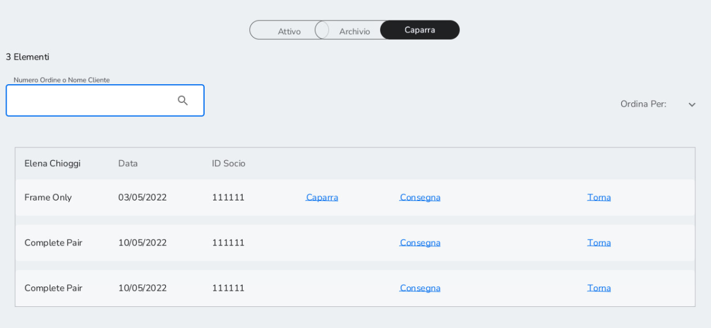
Inserire l'importo del versamento successivo alla prima caparra nel box in alto e cliccare su Procedere al Pagamento per accedere a XStore e registrare l'importo.
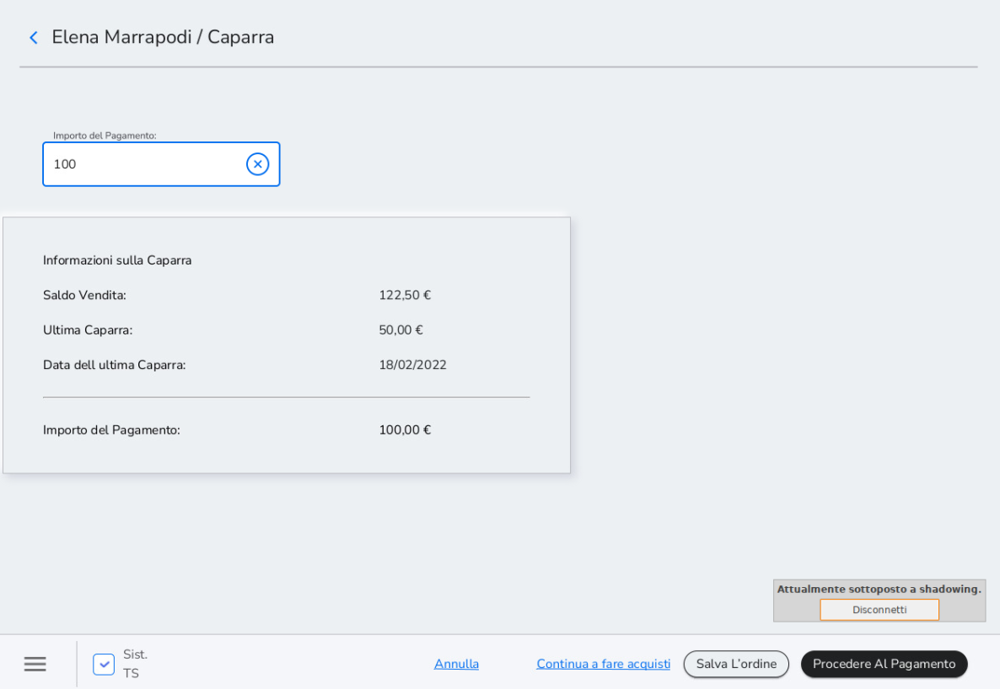
Il processo segue quanto visto per la raccolta prima caparra. In questo caso, l'unica differenza è che la somma netta da saldare è calcolata automaticamente e non è necessario cliccare su In attesa di Pagamento.
Invio ordine al Laboratorio di Sedico
Come visto nel paragrafo 5.5 nella sezione Completamento d'ordine in Ciao! a seconda di cosa scegliamo, al termine della creazione del vostro WO su Ciao!, il sistema stesso da un feedback sulla lavorazione con cui quell\'ordine verrà prodotto (job type)
Se abbiamo scelto Complete pair il sistema può darci 3 feedback diversi:
-
Complete pair se c\'è la disponibilità in laboratorio sia della montatura che delle lenti;
-
Lens only se servono solo le lenti dal lab e la montatura è già in negozio;
-
Frame to Come se la montatura non è qualificata a Sedico (per esempio il caso di Lindberg)
Se abbiamo scelto Solo lenti il sistema in base a cosa abbiamo selezionato può dirci:
-
Se abbiamo fleggato montatura del cliente ci verrà sempre proposto Frame to Come in maniera cautelativa;
-
Se abbiamo inserito UPC di un prodotto riconosciuto a Sedico, allora il sistema potrà proporre lavorazione di Lens Only
Una volta che l'ordine è stato l'ordine a Sedico, poiché la trasmissione non è automatica.
Vediamo insieme la procedura per trasmettere l'ordine a seconda delle diverse casistiche:
-
Complete pair: nel caso in cui il sistema vi proponga Complete pair da Ciao, basterà trasmetterlo cliccando qui
-
Se il sistema propone Lens Only o Frame to Come avete la possibilità di modificarlo prima di trasmetterlo o lasciarlo così.
Se NON volete la tipologia d\'ordine che il sistema vi propone cosa bisogna fare?
Se per esempio il sistema vi ha dato come feedback che l\'ordine è un Frame to Come avete la possibilità di trasmetterlo come Lens Only. Gli step da effettuare sono i seguenti:
1. Ricercare l'ordine in LPA e selezionarlo. Entrare nella sezione Edit Processing Type -- Change Lab. Nella sezione Current Lab l'ordine sarà identificato come Outside Processing - Central Lab - Store Sends Frame
2. Procedere a prendere la tracciatura
3. Nella sezione Edit Lab, scegliere nel primo menù a tendina Outside_Processing e nel secondo menù a tendina scegliere il job type desiderato ossia Lens Only Cut and Edge. Flaggare la voce Send Trace.
4. Nel caso in cui ci sia la voce Printer, selezionare la stampante e poi selezionare Continue. Nel giro di qualche secondo vedrete che l'ordine cambierà job type nella sezione Current Lab.
5. Trasmettere l'ordine cliccando su questa icona
Invio ordine al Laboratorio di Essilor
Una volta che l'ordine è stato inserito in Customer Order è necessario accedere a Opsysweb per gestire e trasmettere l'ordine al laboratorio di Essilor. Questo processo deve essere eseguito solo nel caso il cui il Work Order sia un Lens Only e per quelle lenti i cui ordini non devono essere inviati a Sedico.
È importante premere sempre il tasto Opsysweb così da poter inviare il Work Order al laboratorio corretto.
Effettuando l'accesso a LPA sarà possibile individuare questa tipologia di ordini perché in corrispondenza della colonna Type sarà possibile trovare "RX Sun Authentics".